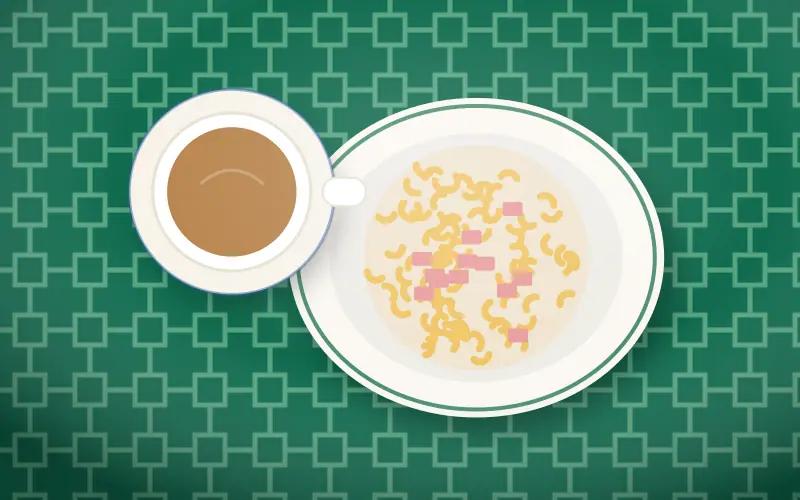

茶 · Cha Chaan Teng19%OFF
Tseung Kwan O · Sai Kung
Tsui Wah (Tseung Kwan O)
翠華（將軍澳）
Baked pork chop rice + iced milk tea焗豬扒飯 + 凍奶茶
$78$96Save HK$18
32/100
HK Cheap Eats Value Score · Below-average valueEstimated from the editors’ rating, price vs similar cha chaan teng places and MTR access. Portion size and customer reviews aren’t scored yet. How it’s calculated
- Hours
- 07:00 – 23:00
- Best for
- Dinner
- Nearest MTR
- Tseung Kwan O 將軍澳 · 3 min walk
- Pay with
- Octopus · Card · FPS / PayMe
- Cuisine
- Cha Chaan Teng 茶餐廳
- Area
- Tseung Kwan O 將軍澳 · Sai Kung 西貢區
- Status
- Unverified
- Source
- HK Cheap Eats editors
- Listed
- 19 Nov 2026
- Price last checked in store
- Not yet
Picture is an illustration, not a photo of this restaurant. Spotted a wrong price or hours? Suggest a correction in the app.